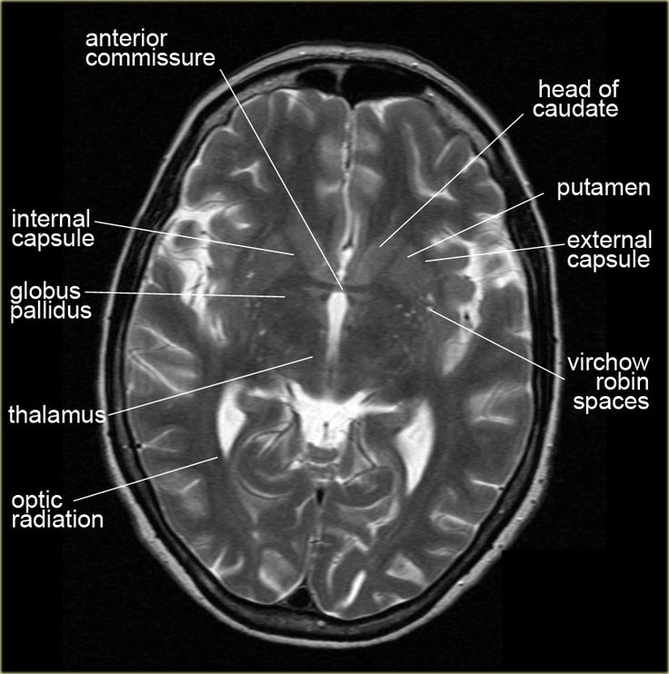

Brain Defect Detection From CT Images
Components of Head CT Image

A CT (computed tomography) scan of the head is a non-invasive imaging technique that uses specialized X-ray equipment to produce detailed cross-sectional images of the brain, skull, and surrounding structures.
These images can help diagnose a wide range of conditions affecting the head and brain. Here's an overview of some common defects and abnormalities that can be identified using head CT images:
1. Traumatic Brain Injury (TBI): CT scans are commonly used to assess traumatic brain injuries such as skull fractures, intracranial hemorrhage (bleeding within the skull), contusions (bruising of the brain tissue), and edema (swelling) following head trauma.
2. Stroke: CT scans can detect ischemic strokes (caused by a blockage in blood flow to the brain) and hemorrhagic strokes (caused by bleeding in the brain). Ischemic strokes appear as areas of decreased density (hypodensity), while hemorrhagic strokes appear as areas of increased density (hyperdensity).
3. Brain Tumors: CT scans can identify the presence of brain tumors, including their size, location, and any associated swelling or mass effect on surrounding structures.
4. Intracranial Hemorrhage: In addition to hemorrhagic strokes, CT scans can detect other sources of intracranial bleeding such as subdural hematomas, epidural hematomas, and subarachnoid hemorrhages.